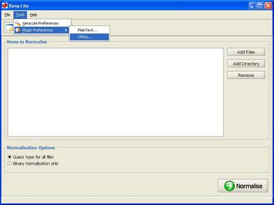
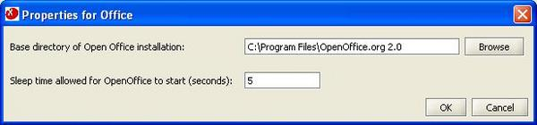

From the Xena Lite menu, select Tools -> Plugin Preferences -> Office.

Click Browse and navigate to the location of OpenOffice 1.1.x. Xena Lite has been tested with versions 1.1.4 and 1.1.5 of OpenOffice. Office document normalising is more reliable where only a single version of OpenOffice is installed on a computer.

Some Linux distributions may have a permissions conflict that prevents Xena Lite from recognising the OpenOffice installation. If Xena Lite fails to find OpenOffice on a Linux system, one easy solution is to open a terminal session as the root user and:
chown -r <username> /path/to/openoffice/